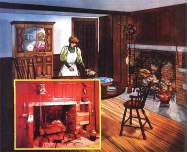

"Roast meats aren't what they used to be," says author Karen Hess. "Until just a century ago, turkeys and squabs and hams and other meats were roasted to golden-brown perfection in front of-not over-a blazing fire. Today, however, the art of roasting meat in this fashion has been almost totally forgotten."
Let's face it: Open-f ire cookery is most of us associate with hamburgers, hot dogs, and marsh mallows ... it's not something we take very seriously. Real cookery (or so we've come to believe) is done on the kitchen stove.
Let us not forget, however, that the kitchen range-as such-only came into general use in America a little more than 100 years ago ... and while it took the crick out of many a hardworking woman's back, the modern range did nothing for the art of cookery. In fact, it has-if anythingchanged cooking for the worse. Thanks to this one invention, the great craft of roasting (the cooking of meats before an open fire) has all but disappeared during the past century.
Roast meat-in case you've forgotten or never known -has a lightly caramelized crust, a juicy interior, and an intensely meaty flavor ... a combination that can only come about through the artful application of direct (open fire) heat. What we call roasts today (a chunk of beef, pork, or whatever cooked-either covered or uncovered-in an oven), our great-great-grandmothers correctly called baked meats.
That we still long for the roastmeat flavors and aromas of a century ago is shown by the current popularity of hibachis and barbecue pits. The problem nowadays is that a great deal of the necessary knowledge of how to cook meats by an open Cure- has been forgotten. Today-for example-you'll frequently see meat being broiled over a fire (which causes flare-ups in the fire itself, thus giving the meat a taste of burnt fat). Correctly done, meat is roasted in front of the fire and basted with the meat's own drippings (which are caught in a pan placed below the spit). When the drippings are used in this way, they help form the roast's delicious crust. (Later, they serve as the perfect "go-together" sauce for the roasted meat.)
The roasting of meat is an art: If the heat is not intense enough, the meat's juices ooze out (taking all the flavor with them) ... while if the heat is too high, the meat's out s ide is charred before its inside is done. Likewise, the meat must be kept turning so that all its surfaces are cooked evenly ... and once the meat, has been well "seized'', the heat must be reduced so that the roast can continue to cook all the way through until it's done. The timing and extent of this heat reduction are both part of the art.
Even the choice of fuel for the fire is critical. Because the meat is perfumed with the fragrance of the burning wood, the selection of firewood cannot be made only on the basis of the fuel's burning qualities. (Bear in mind, too, that in the old days some of that flavor-laden smoke rose to the rafters, where hams and hard sausages and dried apples and mushrooms and chestnuts were slowly curing.)
The whole rich craft of openhearth cooking (which includes the making of chowders, soups, stews, and sauces, in addition to roasts) was perfected over thousands of years by generations of hardworking men and women who spent countless hours in front of open fires. And along the way, these men and women developed museums full of tools that made cooking easier.
The two most basic (and widely used) tools developed for openhearth cookery were the swinging crane (which-by altering the distance between the pot and the flame-could provide any temperature desired) and the rotating spit, for roasting. The latter could be as simple as a stout string drawn lengthwise through a bird or small roast, securely tied, and suspended from a peg on the mantel so that the meat would be positioned properly before the fire. (Every now and then, the housewife-or a childhad only to twist the string and the meat would turn as the cord then unwound.) More elaborate installations featured handsome clockwork mechanisms that-through a system of weights and pulleys-kept the turnspits turning.
Among the many other tools created by blacksmiths for fireplace cookery were dripping pans, reflector shields (to increase the efficiency of the spits), heavy iron pots (often three-legged) with lids designed to hold hot embers (so that the food would be gently cooked from both above and below), and the long-handled skillet.
Roasts and fowl come in such a variety of shapes and consistencies that it's difficult to give precise roasting directions. In general, though, larger pieces of meat require a good-sized clear fire ... and once that wonderfully appetizing crust has formed on the meat's surface, the spit must be moved a small distance away from the blaze so that the meat can continue cooking. A small bird-on the other handshould be roasted by a small, quick fire and will usually be perfectly done by the time the crust has formed. A steak should be propped upright in a folding grill quite close to the fire (over a dripping pan) ... and needs only to be turned once. (All birds, of course, must be trussed and roasts well-tied ... otherwise, they can come apart while cooking.)
Many old-time recipes say to baste the meat with butter ... others insist on lard. (Many, too, would have you dredge a roast with flour shortly before it's done. This step adds to the finished product's appearance, but I prefer not to take it.) Regardless of what the recipes say, however, frequent basting is understood.
How can you tell when a roast is done? The surest guide is the change in its texture: During roasting, a chunk of meat's initial raw flabbiness slowly gives way to firmness. With practice, you'll be able to recognize the desired degree of "doneness" simply by poking the meat with your finger.
(Note: I happen to believe that it's a shame to cook meat beyond what is known as medium rare. After this point, the meat begins to dry out and toughen. If you must have well done meat, however, you'll obtain better results with pot-roasting than with open-fire roasting. The one exception to all this-of course-is pork, which should always be well done.)
Roasted meats need only the simplest of seasonings. If the chicken you're cooking was naturally raised, for instance, it'd be a shame to muck up those buttery pan juices with anything but sea salt, freshly ground pepper, and perhaps some fresh tarragon or chopped Italian parsley. You might like to add a few drops of fresh lemon juice to your roast to heighten the flavor ... but for heaven's sake, leave the horrid bottled sauces (all of them) in the refrigerator and let the meat's natural flavors sing out.
Below-to give you an idea of the kind of roasting techniques that were once popular-are some recipes taken from the 1805 edition of Hannah Glasse's Art of Cookery (which was easily the most popular cookbook in 18th-century America).
In the first place, take great care that the spit be very clean; and be sure to clean it with nothing but sand and water. Wash it clean, and wipe it dry with a cloth; for oil, brick-dust, and such things, will spoil your meat.
Take some parsley shred fine, a piece of butter as big as a walnut, a little pepper and salt; tie the neck end tight; tie a string round the legs and rump, and fasten the other end to the top of the chimney-piece. Baste them with butter, and when they are [done] enough [elsewhere, she specifies 20 minutes] lay them in the dish, and they will swim with gravy [the natural roasting juices].
A middling turkey will take an hour; a very large one, an hour and a quarter; a small one three quarters of an hour. You must paper the breast till it is near done enough, then take the paper off and froth it up. Your fire must be very good.
I've found that cooking-type parchment paper is best for this recipe, although ordinary typing paper will do in a pinch. A thin piece of pork flare fat tied on will also do. Foil, however, gives the meat a steamy" taste.
You'll notice that Ms. Glasse places great stress on having a brisk fire and recommends rather short cooking times. (Most of the old writers, in fact, suggest a mere 45 minutes to roast a large chicken or capon.) This is a far cry from the methods advocated by the present breed of home economists, who have us "roasting" our turkeys for hours on end at 300°F.
Of course, meats used to be cooked much rarer than they are now. Amelia Simmons-in her 1796 book, American Cookery (the first cookbook written by an American)-says firmly with regard to the roasting of beef that "rare done is the healthiest and [is] the taste of this age". Indeed it was, for Ms. Glasse wrote that a 10-pound piece of beef would be roasted in an hour and a half "at a good fire" (longer, in ''frosty weather").
Rare, medium rare, or well done, roast meats aren't what they used to be. Not unless you're a practitioner of the old and very traditional (though almost lost) art of openhearth cookery!
|
 |
|
|